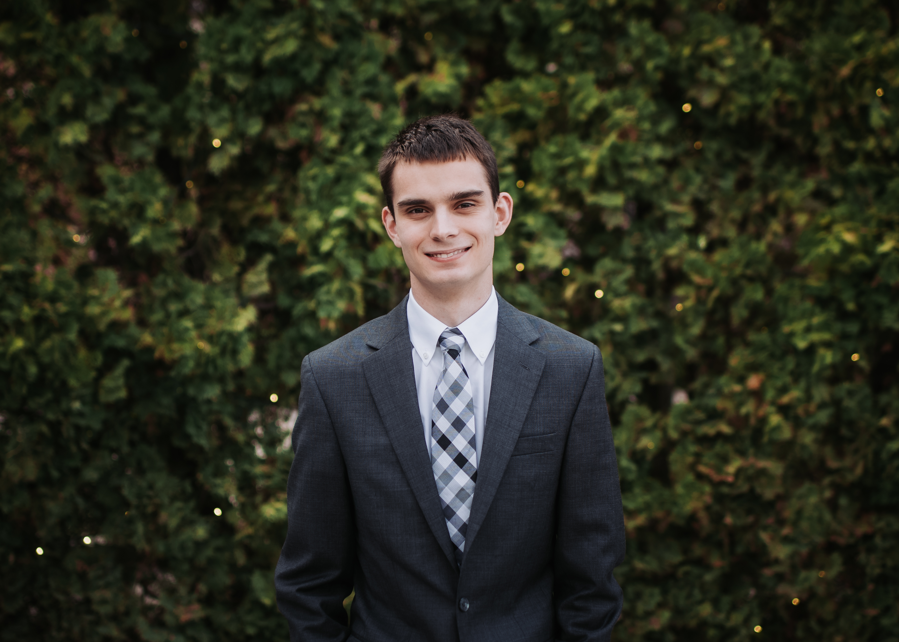
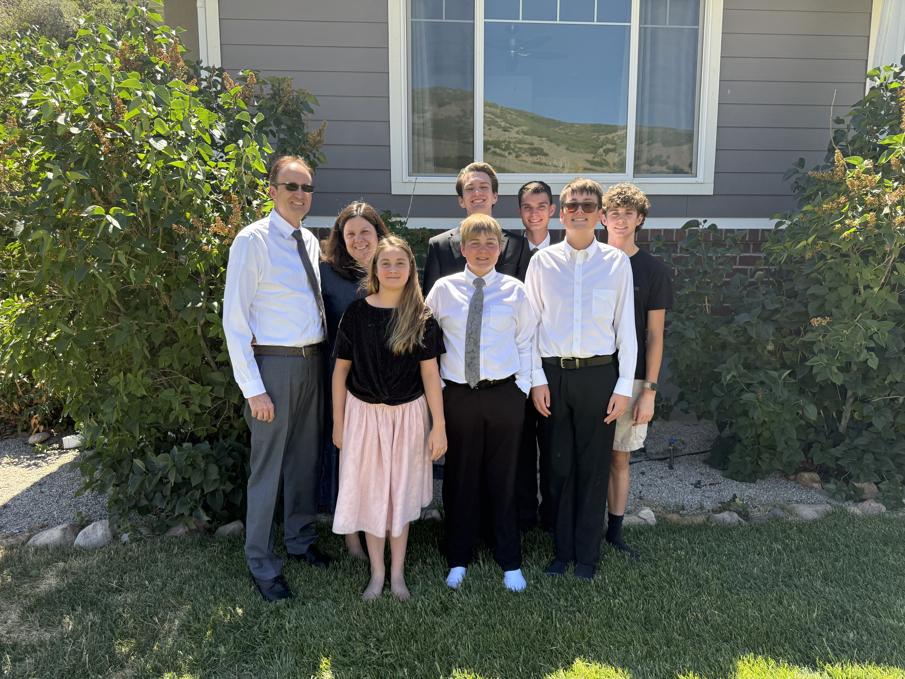

Hello! My name is Adam Halliday, and I'm from Kamas Utah. I'm 20 years old and a new freshman here at BYU. I want to do Information Systems as my major. I'm excited to keep learning more and to get to know new people.
I really enjoy reading books from a wide range of categories and topics. I'm pretty flexible with what I read, but I particularly enjoy fiction and science fiction books. Some of my favorite books that I've read include the Red Rising series, Ranger's Apprentice, and (generically) Harry Potter.
I greatly enjoy spending time with my friends. Over the years, I've had the chance to play games, eat out, go to concerts, and more with my closest friends. Recently, I've been trying to get to know new people. While it hasn't been easy, I've had the chance to hang out with some awesome people.
Recently, I've been trying to study more about cybersecurity. In my efforts to learn more, I have played around in TryHackMe. Most recently, I've started studying the learning objectives for the Security+ exam. I hope to take the certification exam within 2-4 months.

I come from a family of 8 people. I'm the oldest of 5 boys and 1 girl. We're 20, 18, 16, 14, 12, and 9 years old. We enjoy spending time together and learning from each other. In my household, kindness, respect, and personal freedom are fundamentally important. I greatly value the time I've spent with them and all the things I've learned.
My religion has been a central part of my life. My family has always been active in the church, so I have memories of singing in primary and performing parts in the primary program. I was first able to read the Book of Mormon when I was a Sophomore in high school. The experience I had with that Book changed my life. I knew that I needed to serve a mission, so I did so. I served in the Colombia Medellin Mission from August 2023 - August 2025. I'm continuing to try to strengthen my testimony on the daily.
The time is: